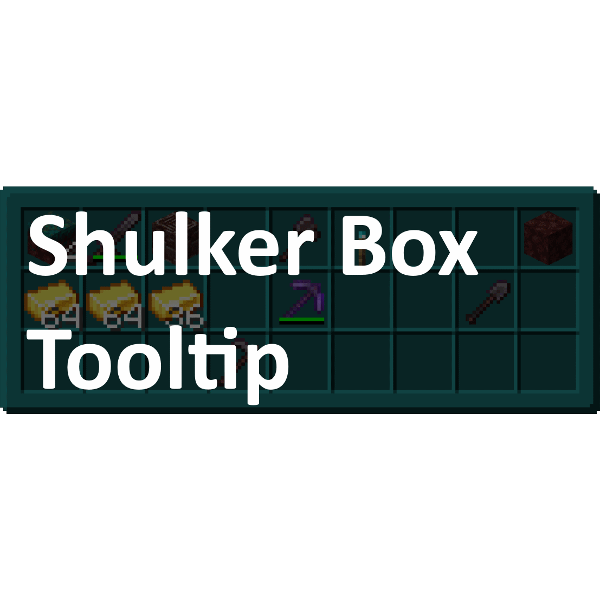
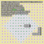

Minecraft Community Content
Welcome to a quick showcase of some amazing content for minecraft that I have collected over the time I have been playing! Give these things a check out. They are all also completely free of charge, letting you improve your experice at your behest.

Hollikill's Minecraft Addons
Personally created by me!
A large collection of resource packs, datapacks, and other tools that are designed by me, with most of the content also being personally created by me.
Optifine
Another great tool to add on to minecraft is one of the best tools I have found on the internet. All around FPS boost, nearing 2x sometimes; smoother lighting, including lighting in hand; and connected glass, something you will never regret seeing.

Fabric
When you think of minecraft modding, the thing that comes to most people's heads is the Forge modloader. While this is a quality launcher, and does its job well, it simply cannot compare to the adaptability and updatability of the Fabric modloader. Although the documentation for writing mods is... less then many would like. Fabric is a modloader designed to be leightweight and easy to update to new versions, and it acomplishes it.
Immersive Portals
It may not be the most useful, or the fastest running out mod out there, but it sure is up there. The Immersive Portals mod provides a seamless and beutiful atmosphere to your portals, all while improving portal lag. It also provides multi-dimesional branching, such as the nether actually connected to the overworld, and a infinitely repeating world. These connect through the build limit on the ceiling and the floor. VERY COOL.

Shulker Box Tooltip
One of the hottest utility modes out there, this provides an QoL change to shulker boxes, making it so that you can see them in your inventory. Not a lot to say, but a whole lot to enjoy. You can even use this one in multi-player servers!

Minihud
This fabric mod is possibly the most useful one out there, informational wise. It provides tools to display shapes that show things like slime chunks, spawn and despawn spheres, and genereal info like speed of play, time, location, and biome. Don't forget, this mod has dependencies!